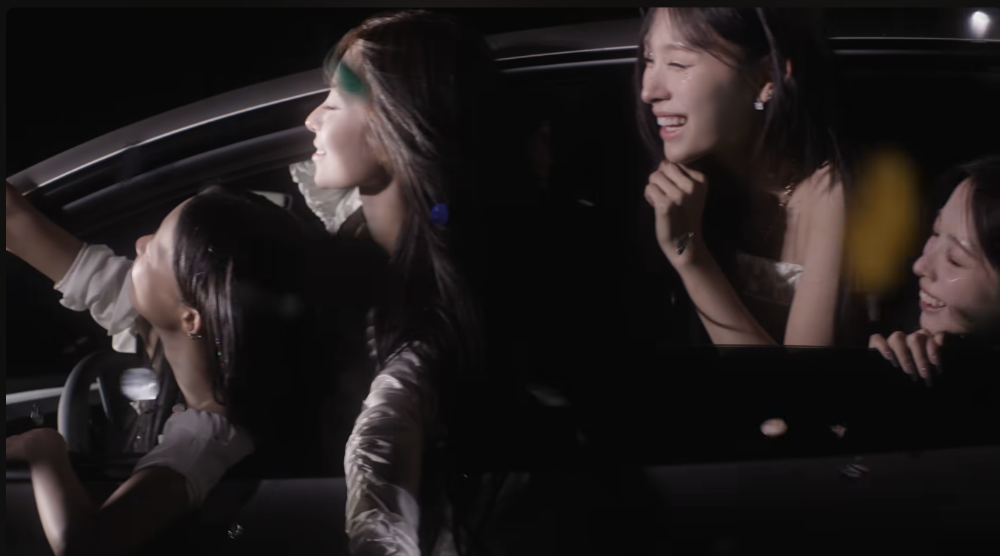
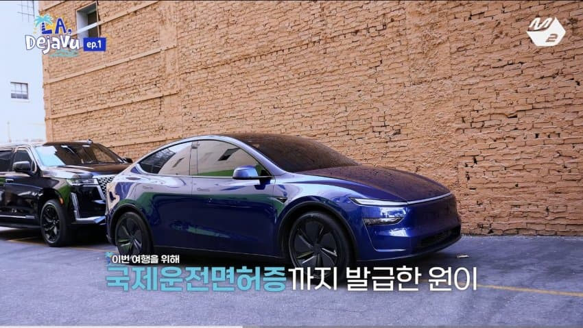
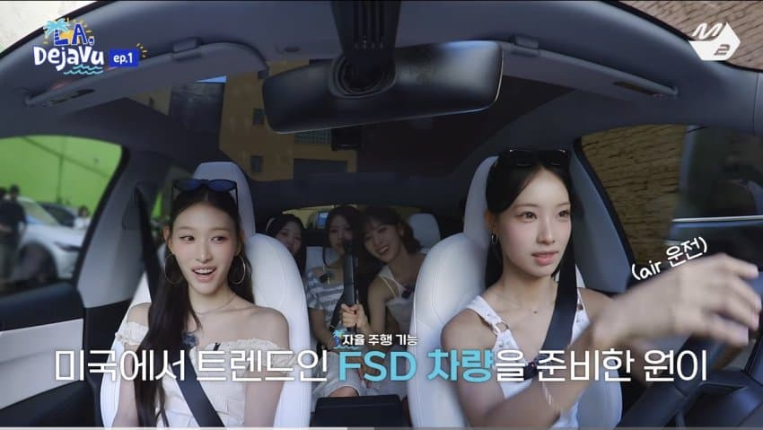
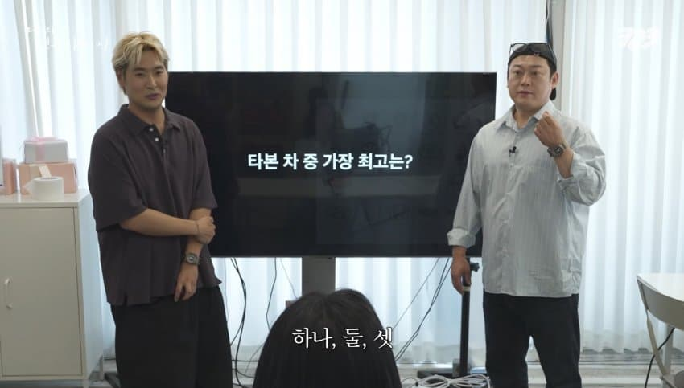
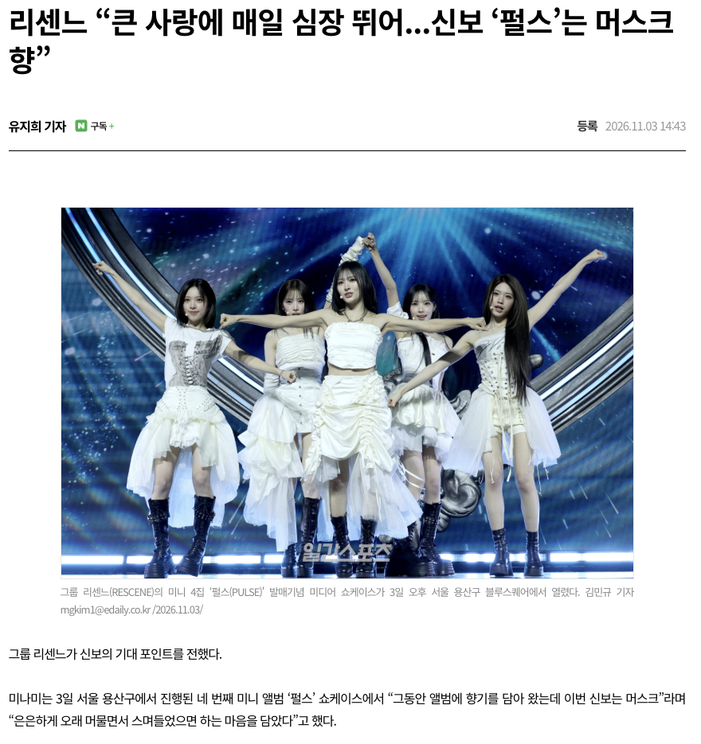

신곡 뮤비에 모델yl


미국여행가서 Fsd 체험하려고 국제면허증 발급받음

타본차중 테슬라가 최고라고함

신곡앨범 향기 머스크향 ㅋㅋ

신곡 뮤비에 모델yl


미국여행가서 Fsd 체험하려고 국제면허증 발급받음

타본차중 테슬라가 최고라고함

신곡앨범 향기 머스크향 ㅋㅋ
2032년 지나고부터 주니퍼 차주들 곡소리 날 거 뻔해서 기대됨. 떼법 징징거리지나 말았으면 ㅋㅋ 너네가 선택한 짱슬라다
ㅋㅋ 미래에서 오셧나요?
테슬라만 완성차 중 "유일하게" 배터리 부분수리가 안 됨.
테슬라 배터리팩의 총 4천개가 넘는 셀 중 1개만 맛 가도, 배터리 전체 교체 해야함.
부품 갯수가 많으면 뭐다? 고장 확률이 높다~ 근데 부분 수리도 안된다? 폭탄이지.
왜 2032임?
국토부 2032년에 자율주행 제도 마련 예정
현대 로드맵 2032년 전 차종 자율주행 적용 목표
왜?
왜?
전기차는 장기렌탈이 좋은거아니냐?
배터리 리스크도 인수안하면 내가 안가져 가는거잖아
그 마인드로 하브 장기렌탈함
그거는 모든 차 다 같은거 아니냐? 현기는 큰고장나면 "아 내가 운이 나빳구나~" 하고 말어? 바로 정의선 욕박고 시작하는거지
배터리 교체비용 비교해보면 현기는 테슬라대비 1/10정도임
테슬라처럼 배터리 통교환을 해야 비슷한데, 현기는 배터리 통교환 할 일이 없음 모듈형식이라
테슬라 전기차는 모터를 갈아야되자나. 통교체만 가능함.
모든 차가 같지 않다는게 핵심 ㅋㅋㅋ
현기는 배터리 하나 고장나면
셀 모듈 팩 구조로 되어있어서 하나만 교체하면 됨
그래서 60만원 정도 든다
테슬라는 하나 고장나면…
머스크향에서 긁히네
테슬라 빠네..
이러다가 테슬라 광고도 할라나...하면 서사가 장난아닌데
머슼하네
테슬라 타보고 싶긴 해...
앱등이나 테슬람처럼 행동만 안하면야...
팬덤 나이대 취향 고려
팬덤이 어려서 쿨하고 섹시한 테슬라 인기가 높아서 그런가보다. 나이 많른 팬덤이면 한국차 주로 언급할지도
쿨하고 섹시한 테슬라.... 영포티+테슬람 환상 콜라보 혐오스럽네
영포티들 또 왜이러냐
Bms터지기전 갓슬라
Bms터진 후 일론애미
삼성폰으로 영뽀리 호감도 올려놓고 테슬라로 까먹네 ㅠㅠ
광고 노리는중 ㅋㅋ


영포티가 환장할수밖에ㅋㅋㅋㅋㅋㅋㅋ
대 일 론
삼성과 테슬라.. 이거 완전
현기차는 수리하기 편하다, 테슬라는 수리하기 비싸다 해봐야 ㅋㅋㅋ 수리해봤자 팔다리 병신인 장애인 많이 쓰세요 ㅋㅋ 아팠을때 돈 많이 깨져도 정상인 쓰고 말지
배터리 수리비 보고 테슬라 포기하긴했지
배터리교체할 돈이면 중고차가 한대던데
근데 큰 고장 나기전까지는 테슬라가 좋긴함. 큰고장 나면 머스크는 그날로 애미팔아먹은 고아 되는거고